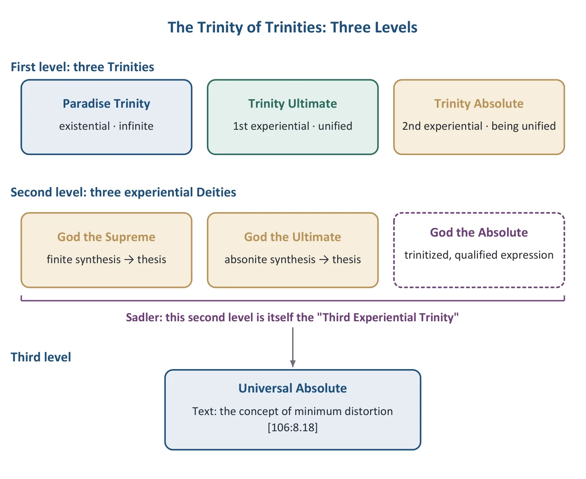

O epílogo na eternidade e o posfácio
Original: Epílogo na eternidade (primeiro a terceiro) · Posfácio (pp. 123–146)
NESTE CAPÍTULO
Enquanto o prólogo tratou do que a Deidade existencial fez antes da criação, o epílogo imagina o que a Deidade experiencial pode fazer para além da criação. Distinguindo a qualidade da quantidade, Sadler imagina Deus, o Supremo, e Deus, o Último, trinitarizando juntos Deus, o Absoluto, com o Cosmos Infinito abrindo-se ao mesmo tempo. Ele então antevê as três fases da Idade Final, as últimas parcerias da Deidade dual e os três últimos níveis em que a Deidade total funciona, e encerra, como começou, com o Infinito. No Posfácio, Sadler chama O Livro de Urântia de uma história de amor e aventura e aponta Deus como o seu verdadeiro herói.
1. Um novo começo a partir do impasse (orig., pp. 123–124)
Um epílogo que corresponde ao prólogo
O “Prólogo na eternidade”, no início do estudo, examinou o que a Deidade existencial fez antes da criação. Esses atos prepararam o palco para toda a história, na qual a criatividade do Paraíso se lança para fora e os seus resultados são reunidos novamente nos níveis supremo e último. Agora, na extremidade oposta, o epílogo tenta imaginar o que a Deidade experiencial poderia fazer para além da criação: atos que atravessam a Barreira da Infinitude e, até certo ponto, contornam o Impasse dos Absolutos. O epílogo tem três partes. A primeira trata da Idade Final, a segunda das profundezas dessa idade, e a terceira do que vem depois do “fim do fim”.
Uma nota de frustração
Sadler reconhece que o estudo principal terminou com uma clara nota de frustração. A força irresistível da Trindade Absoluta encontrou o fato inamovível da infinitude eterna e chegou a um impasse. A unificação da Trindade Absoluta é uma tarefa sem fim, e, assim, a Trindade das Trindades também está incompleta. No seu primeiro nível, um membro, a Trindade Absoluta, não está unificado; no seu segundo nível, um membro, Deus, o Absoluto, falta por completo.
Além disso, o universo-mestre, agora mobilizado como universo nuclear, ainda não tem nenhum citoplasma ao seu redor. O espaço que o rodeia continua vazio. Cada nebulosa do universo-mestre foi organizada pelos organizadores de força, que atuam em nome dos Arquitetos Mestres, e Sadler duvida de que os planos dos Arquitetos alcancem além das fronteiras da criação-mestra. Onde, então, está a saída?
2. Separar a qualidade da quantidade (orig., pp. 124–125)
A pista que Sadler encontra é a distinção entre qualidade e quantidade. Ele propõe associar a palavra “absoluto” à qualidade não diminuída e a palavra “infinito” à quantidade ilimitada. Uma vez separadas as duas, o destino absoluto pode ser alcançado de um modo que não é infinito: limitado em quantidade, talvez, mas completo em qualidade.
A sua ilustração é muito simples. Ninguém consegue respirar todo o ar da Terra numa vida inteira. No entanto, esse limite de quantidade não significa que não se possa respirar de modo algum, nem diminui a qualidade do ar que se inspira. O ar de uma única respiração é ar no sentido pleno.
Havona é o exemplo. Na trinitarização do Espírito pelo Pai e pelo Filho, quando Havona veio a existir, as Deidades derramaram a qualidade plena da perfeição divina nessa criação central, sem nada reter. A sua quantidade, porém, não a fizeram infinita; caso contrário, todo o espaço eterno teria sido ocupado por um único universo existencialmente perfeito. As Deidades limitaram Havona a um bilhão de mundos e a um espaço delimitado. Não trouxeram o universo-mestre à existência existencialmente, nem eternizaram o Cosmos Infinito por um único comando. Por ter sido a quantidade limitada desse modo, todo o desenvolvimento experiencial posterior a Havona tornou-se possível. Da mesma maneira, conclui Sadler, ao limitar quanto da absolutez poderia ser experiencializado, as Deidades prepararam o caminho do crescimento sem fim.
O Livro de Urântia também pensa em termos de qualidade e quantidade, numa passagem que discute a função total da Trindade Absoluta.
E pareceria, ainda, que o incondicionado seria ilimitado também, ao menos de um ponto de vista qualitativo, embora não estejamos tão seguros quanto a tais relações quantitativas.106:6.4
Sadler observa que a única alternativa ao crescimento sem fim é um crescimento que termina. E o que viria depois disso? Um universo cujo crescimento terminou é um universo que não tem mais para onde ir.
3. A trinitarização que abre a Idade Final (orig., pp. 125–127)
A simetria da primeira idade e da Idade Final
Sadler propõe examinar a Idade Final com o mesmo cuidado que dedicou à primeira idade no terceiro prólogo. As duas idades são simétricas. A primeira idade tem um fim, mas nunca começou no tempo; a Idade Final começa no tempo, mas nunca termina. Uma é uma realidade da eternidade passada; a outra, uma realidade da eternidade futura.
Um inventário do que era factual quando a primeira idade despontou registra um par de Deidades existenciais, o Pai e o Filho, juntamente com uma base de operações, a Ilha do Paraíso. Unidos como o Pai-Filho, o Pai e o Filho trinitarizaram o Espírito Infinito, uma Deidade coordenada; como resultado, Havona apareceu e a Trindade do Paraíso foi formada (capítulos 1 e 3).
Sadler espera um inventário semelhante quando a Idade Final despontar: um par de Deidades experienciais, o Supremo e o Último, juntamente com uma base de operações, o universo-mestre concluído. Ele acredita que a história do universo se repetirá. O Supremo e o Último, unidos como o Supremo-Último, trinitarizarão Deus, o Absoluto, uma Deidade coordenada; como resultado, o Cosmos Infinito começará e a Trindade das Trindades será entretecida. O que ocorreu existencialmente na primeira idade seria assim repetido experiencialmente na Idade Final.

Há também diferenças. Como o Pai e o Filho são ambos existenciais e infinitos, tudo o que produzem é também existencial e infinito. O Supremo e o Último são Deidades experienciais, menos do que infinitas; assim, Deus, o Absoluto, o seu produto, seria igualmente uma expressão experiencial e qualificada. Contudo, ambos são todo-poderosos e, portanto, podem mobilizar toda a realidade experiencial factualizada contida no universo-mestre completado. No capítulo 12, Sadler comparou o grande universo a uma bola de tênis e o universo-mestre a uma grande lua; tudo, “da bola de tênis à lua”, seria posto em ação nesse ato. A primeira trinitarização foi pré-criadora; a última, supercriadora. Uma vez que o nível último é o último nível criador, explica Sadler, o Supremo-Último e Deus, o Absoluto, que aparecem depois dele, são manifestações supercriadoras.
Dois irmãos com um aríete
Sadler guarda a cena na mente como uma única imagem. Dois irmãos experienciais, um mais velho e um mais novo, carregam aos ombros um enorme aríete e posicionam-se diante de uma muralha onde está inscrito “Infinitude”. Carregado no aríete está todo o poder obtido ao alcançar a soberania experiencial sobre todo o universo-mestre. O irmão mais velho exorta o mais novo a balançar com toda a força, pois eles pretendem abrir caminho. Ambos sabem muito bem que a muralha em si não pode ser demolida. Mas sabem também que podem abrir-lhe uma brecha, e que o farão. O que dá peso ao aríete são todas as coisas, significados e valores experienciais do universo, mobilizados como poder-personalidade.
4. Uma nova transformação da síntese (orig., pp. 127–128)
Tese sobre tese
No capítulo 9, Sadler mostrou como uma síntese anterior se converte numa nova tese. Quando o finito foi completado, a síntese no Ser Supremo deu origem a uma nova tese, a primeira Trindade experiencial; quando o absonito foi completado, a síntese em Deus, o Último, deu origem a uma nova tese, a segunda Trindade experiencial. O Supremo e o Último foram, respectivamente, “a síntese do finito total” e “a síntese do absonito total”.
Agora Sadler vê um novo tipo de transformação. Na sua união trinitarizadora, as próprias duas Deidades experienciais tornam-se novas teses. O Supremo torna-se a tese do finito total; o Último, a tese do absonito total; e Deus, o Absoluto, que eles trinitarizam, torna-se uma terceira tese, a tese experiencial do absoluto (qualificado). Tese é colocada sobre tese.
Já aconteceu algo semelhante antes? Sadler responde que algo parecido apareceu no prólogo. Ao sair da infinitude, Deus estabeleceu o Filho como a tese absoluta da Deidade e, como o Pai do Filho, estabeleceu-Se a Si mesmo como a pré-tese da Deidade. O Pai-Filho, por sua vez, estabeleceu o Espírito como a tese associativa da Deidade. Essa estratificação tríplice culmina na Trindade do Paraíso, a tese da Deidade existencial indivisa. Do mesmo modo, sustenta Sadler, a tese tríplice da Deidade experiencial (Supremo, Último e Absoluto) encontra unidade qualitativa no segundo nível da Trindade das Trindades e, nesse processo, expande-se para fora como a tese indivisa da Deidade total, ao mesmo tempo existencial e experiencial.
Semelhantes, mas não iguais
Sadler insiste repetidamente em que o paralelo é análogo, não homólogo. Ao trinitarizar o Espírito, o Pai-Filho estava emergindo da infinitude; ao trinitarizar Deus, o Absoluto, o Supremo-Último procura entrar na infinitude. O que o Pai-Filho realizou tanto em qualidade como em quantidade, o Supremo-Último só pode realizar em qualidade. Deus, o Absoluto, aparece como realidade absoluta em qualidade, mas, em quantidade e universalidade, Ele é a manifestação de um Absoluto que é menos do que infinito.
5. O Cosmos Infinito começa; a Trindade das Trindades toma forma (orig., pp. 128–130)
A primeira parcela do Cosmos Infinito
Sadler considera o aparecimento trinitarizado de Deus, o Absoluto, como o acontecimento mais profundo da história do universo desde o aparecimento do Espírito Infinito. Assim como o Espírito Infinito se tornou pessoal juntamente com o aparecimento de um universo eterno (Havona), também o aparecimento de Deus, o Absoluto, será acompanhado pelo começo do Cosmos Infinito. A primeira criação é factualmente eterna; a última criação é potencialmente infinita. Uma vez que o Supremo e o Último podem mobilizar tanto os potenciais físicos como os espirituais, a sua união é total e nada deixa de fora. Sadler infere, portanto, que Deus, o Absoluto, aparecerá no mesmo momento em que a zona mais interior do Cosmos Infinito for materializada.
Como será essa “primeira parcela” do Cosmos Infinito? Como disse no capítulo 15, Sadler pensa que ela será diferente de tudo o que já apareceu na criação-mestra. Pela primeira vez, até os desígnios transcendentais dos Arquitetos Mestres serão eles próprios ultrapassados. Ele acrescenta, contudo, que certos aspectos existenciais da Havona eterna poderiam dar um indício do caráter desse novo domínio.
Quanto ao seu tamanho, só podemos conjecturar. Com o grande universo fixado no tamanho de uma bola de tênis, o universo-mestre era uma lua de 3.200 milhas de diâmetro. Sadler espera que a mesma proporção se repita mais uma vez. Reduza-se o universo-mestre a uma bola de tênis, e a zona mais interior do Cosmos Infinito igualaria a lua em tamanho. E isso é apenas a zona mais interior, provavelmente a menor. Os seus fundamentos são os casos anteriores. Havona é muito pequena em comparação com o tamanho (embora não com a massa) dos superuniversos, e o grande universo é pequeno em comparação com o universo-mestre. Um núcleo sempre foi pequeno ao lado do citoplasma que governa.
O segundo nível é preenchido
O aparecimento de Deus, o Absoluto, oferece mais um paralelo com o aparecimento do Espírito Infinito: ambos levam à formação de uma Trindade. Assim como o Espírito Infinito completou a personalização da Deidade existencial e tornou assim possível a Trindade do Paraíso, o aparecimento (qualificado) de Deus, o Absoluto, completaria, na prática, o segundo nível da Trindade das Trindades. O Livro de Urântia diz que se sustentam várias teorias sobre o terceiro membro desse segundo nível.
Deus, o Absoluto, está, indubitavelmente, envolvido nessa associação como a personalidade conseqüência da função final do Absoluto da Trindade, e o Absoluto da Deidade ainda é uma realidade existencial com status de eternidade.106:8.16
Quanto ao terceiro nível, nem mesmo Sadler tem certeza. Enquanto Deus, o Absoluto, permanecer para sempre incompleto no sentido quantitativo, pensa ele, o terceiro nível será ocupado pelo Absoluto Universal. Esse juízo apoia-se nas seguintes palavras do texto.
Caso o terceiro membro da Trindade das Trindades seja concebido como sendo o Absoluto Universal, provavelmente isso irá representar um mínimo de distorção da verdade …106:8.18

Se Deus, o Absoluto, chegasse algum dia a terminar o Seu crescimento experiencial, encontrar-nos-íamos fora da infinitude, para além do fim da eternidade. O que Sadler quer dizer é que isso nunca acontecerá.
6. As profundezas da Idade Final: três fases e a Terceira Trindade Experiencial (orig., pp. 131–134)
Construir diques para o pensamento
Uma vez aberta a brecha na Barreira da Infinitude, toda a eternidade futura fica aberta à especulação sem fim. Para evitar que o pensamento seja arrastado num mar de “e se” até o absurdo, Sadler propõe construir diques ao seu redor. Ele divide o desenvolvimento do Cosmos Infinito em três fases. A Fase Um é a zona mais interior, tornada factual juntamente com o aparecimento de Deus, o Absoluto, e corresponde ao Supremo-Último. A Fase Dois é o estágio intermediário de desenvolvimento que se segue; pode ter ou não ter um fim, e corresponde ao Último-Absoluto. A Fase Três pode ser um estágio final puramente teórico, que corresponde à associação do Absoluto e do Pai-Infinito, o “completar” do ciclo da realidade.
A razão das três divisões é simples. Para conter as idéias de começo, meio e destino, ou de início, realização e consumação, são necessários pelo menos três compartimentos. Na prática, poderia haver igualmente sete, ou um milhão. A tríade de início, realização e consumação vem da linguagem que O Livro de Urântia usa ao descrever a Trindade das Trindades [106:8.12].
A Terceira Trindade Experiencial
Sadler apresenta a proposição de que o segundo nível da Trindade das Trindades é ele próprio uma outra trindade, a “Terceira Trindade Experiencial”. O seu fundamento é a semelhança das origens. No princípio, o Pai e o Filho, unidos como o Pai-Filho, trinitarizaram o Espírito, que completa a Deidade existencial como a sua terceira pessoa, e esses três tornaram-se a Trindade do Paraíso. No fim, o Supremo e o Último, unidos como o Supremo-Último, trinitarizam Deus, o Absoluto, que se torna a terceira pessoa da Deidade experiencial, e esses três tornam-se a Trindade experiencial final.
Uma diferença é decisiva. O Espírito “completa” a factualização da Deidade existencial, ao passo que Deus, o Absoluto, “começa” a factualização final da Deidade experiencial. A trinitarização pelo Pai-Filho foi um ato de infinitude sem limites; a trinitarização pelo Supremo-Último é absoluta em qualidade, mas não infinita em quantidade. O Espírito Infinito, eternizado como um ser completo, tem pouco espaço para crescer; Deus, o Absoluto, em quem apenas uma porção da infinitude do Absoluto da Deidade se tornou factual, está no limiar de um crescimento sem limites. A diferença entre o potencialmente infinito e o factualmente infinito é a diferença entre crescimento e não crescimento.
Sadler conclui que essa Terceira Trindade Experiencial difere de todas as outras trindades. É a única composta apenas de Deidades experienciais. Como a Trindade do Paraíso, tem um terceiro membro trinitarizado, mas difere dela por estar ainda crescendo, expandindo-se e sendo unificada. É também a única trindade contida dentro de outra trindade, a Trindade das Trindades.
O crescimento de Deus, o Absoluto
Sadler antevê três relações nas quais Deus, o Absoluto, crescerá. A primeira é com a Trindade Absoluta, que ainda não está unificada. Normalmente, essa Trindade teria de ser unificada antes que Deus, o Absoluto, pudesse aparecer; tendo aparecido primeiro pelo método da trinitarização, Deus, o Absoluto, coopera agora com a Sua Trindade “ancestral”. A segunda é com o Supremo-Último. Assim como o Espírito expressa intensivamente a parceria do Pai-Filho, Deus, o Absoluto, expressa extensivamente a parceria do Supremo-Último e cresce junto com ela. A terceira, e a mais característica, é com o Absoluto da Deidade. Como Deus, o Absoluto, foi factualizado a partir de apenas uma parte do potencial infinito do Absoluto da Deidade, uma infinitude intacta de potencial permanece fora Dele. Ele expande-se para fora, nesse potencial, e essa expansão é o Seu crescimento. Uma vez que o espaço para o crescimento é infinito, o crescimento nunca termina.
Sadler e o texto
O Livro de Urântia fala de Deus, o Absoluto, como “a personalidade conseqüência da função final do Absoluto da Trindade” [106:8.16]. Tomando-se as coisas pela ordem, a Trindade Absoluta seria primeiro unificada, e Deus, o Absoluto, apareceria então como o seu resultado. Sadler está ciente dessa ordem e, por isso, oferece a interpretação de que Deus, o Absoluto, aparece “antes do tempo” pelo caminho diferente da trinitarização e depois coopera com a Trindade Absoluta, ainda não unificada. Essa é uma construção do próprio Sadler, uma tentativa de preencher uma lacuna que o texto deixa em aberto. Além disso, onde o original (p. 134) descreve a Trindade das Trindades como “existencial-existencial”, isso parece ser um lapso por “existencial-experiencial” [cf. 0:12.9].
7. As últimas parcerias da Deidade dual (orig., pp. 135–139)
A Deidade dual desbrava, a Trindade consolida
Ao longo de todo o estudo, Sadler observou um princípio em ação: a Deidade dual desbrava, e a Trindade consolida. Continuará o princípio válido para além do universo-mestre? Ele retoma as seis parcerias que O Livro de Urântia dá a conhecer.
A co-participação do Pai-Filho tornou-se do Filho-Espírito e, então, Espírito-Supremo e depois Supremo-Último e Último-Absoluto, indo mesmo até o Absoluto e ao Pai Infinito — o completar do ciclo da realidade.106:8.12
Sadler agrupa essas seis em quatro categorias: a eternidade (Pai-Filho), o universo-mestre (Filho-Espírito e Espírito-Supremo), o pós-universo-mestre (Supremo-Último e Último-Absoluto) e a eternidade futura (Absoluto e Pai-Infinito). Essas associações começam como existenciais, tornam-se progressivamente mais experienciais e, por fim, movem-se numa direção experiencial-existencial.

A Procissão da Iniciativa
Sadler dá a essa seqüência o nome de “A Procissão da Iniciativa”. A idéia é que Deus entrega aos Seus coordenados uma parte da iniciativa na autoexpressão criadora, e quer que essa parte seja tão plena quanto eles possam suportar. Deus abre a realidade ao tornar-Se Pai do Filho Original, e com esse Filho Ele faz os Filhos Criadores. Os Filhos Criadores gozam de plena filiação em relação às Deidades do Paraíso, mas, nos seus próprios universos em evolução, tornam-se pais experienciais. Na relação Pai-Filho, o Espírito foi personalizado como a agência coordenada que dá expressão a Havona; na relação Filho-Espírito, o Espírito, por meio dos Espíritos Criativos, torna-se o “segundo criador” dos universos locais. O que o Filho Eterno “experienciou” no Paraíso, na eternidade, os espíritos do Espírito experienciam no tempo e no espaço. Na terceira fase, o Espírito-Supremo, Sadler espera que o Espírito tome uma nova iniciativa no espaço exterior, assistido pelo Ser Supremo, cujo crescimento estará então completo. Como o texto nada diz sobre o resultado, ele não especula a esse respeito.
Supremo-Último e Último-Absoluto
As três últimas parcerias situam-se para além do universo-mestre, já que envolvem o Último, que de fato só entra em cena depois que toda a criação-mestra estiver concluída. Sadler compara o Supremo-Último ao Pai-Filho. Cada um trinitariza a terceira pessoa de uma Deidade, cada um abre um universo (o universo da eternidade e o universo da infinitude), e cada um forma uma trindade juntamente com essa terceira pessoa. Mas, enquanto o Pai-Filho inicia, realiza e consuma, o Supremo-Último inicia e realiza em parte, e não consuma.
A Fase Um, aberta pelo Supremo-Último, será imensamente longa. Sadler diz que pensar nela é como pedir a um mecânico que trabalha com décimos de milésimo de polegada que imagine o tamanho de uma galáxia a milhões de anos-luz de distância. Com o Último-Absoluto, a especulação torna-se ainda mais difícil, e ele procede por analogia. Assim como o Filho-Espírito surgiu do Pai-Filho, o Último-Absoluto surgirá do Supremo-Último e assumirá o encargo da fase intermediária do Cosmos Infinito, a sua “realização”. Contudo, essa parceria dificilmente pode alcançar sequer um destino qualitativo; pode começar, mas nunca pode ser terminada. Mesmo que a zona mais interior apareça subitamente, como Havona apareceu, o crescimento que se segue, se for seqüencial, não tem fim.
Sadler insere aqui um parêntese. O Último-Absoluto não é apenas uma questão do futuro remoto; já agora, no grande universo, é real como um nível de valor. O texto descreve deste modo o destino dos Ajustadores Personalizados.
… e ambos estão assim destinados à futura suprapersonalidade eterna de ministério transcendental dos reinos absonitos do Último, do Último-Supremo, até os níveis mesmo do Absoluto-Último.109:7.5
Um Ajustador Personalizado é o próprio fragmento de Deus que se funde conosco, agora personalizado. Se tais Ajustadores podem servir até o nível do Último-Absoluto, raciocina Sadler, também os finalitores funcionarão ali, dados tempo e crescimento suficientes.
A primeira e a última parceria
A parceria final, o Absoluto e o Pai-Infinito, é o “completar” do ciclo da realidade. Sadler vê-a como uma associação existencial-experiencial. Existencialmente, está sempre presente; experiencialmente, está sempre distante; existencial-experiencialmente, é uma “realidade em devir”. Por mais que a factualização avance, o potencial que nunca será expresso não diminui em nada. Se essa é uma relação de pura eternidade, deixa de ter sentido falar de crescimento por comparação com o passado ou o futuro. Como diz Sadler, a relação pode não estar além do conceito, mas certamente está além do conceito compreensível.
8. Os três últimos níveis da função da Deidade total (orig., pp. 139–142)
Para além dos sete níveis
O Livro de Urântia diz que a Deidade total funciona em sete níveis [0:1.3]. No segundo prólogo, Sadler examinou os níveis estático, potencial e associativo, e, no estudo principal, os níveis criador e evolucionário, que se estendem para fora, e os níveis supremo e último, que se voltam para dentro. Contudo, o nível último é o último nível criador, e Deus, o Absoluto, é supercriador. Nenhum dos sete níveis é chamado de nível absoluto; o nível absoluto é mencionado como o nível que a Trindade do Paraíso alcançou existencialmente.
As Deidades do Paraíso alcançam esse nível, existencialmente, por meio da Trindade; mas esse terceiro nível de expressão unificadora da Deidade não está plenamente unificado experiencialmente.0:1.13
Sadler acredita que, até que as Deidades experienciais sejam factualizadas, esses sete níveis são tudo o que há, mas que, uma vez factualizadas as três Deidades experienciais, mais três níveis da função da Deidade total virão à luz. A Deidade existencial surge dentro da infinitude e move-se para fora dela; a Deidade experiencial surge fora da infinitude e esforça-se por penetrar nela. Se a Deidade existencial retornasse à infinitude, refaria o seu percurso do nível associativo ao potencial e depois de volta ao estático. A aproximação da Deidade experiencial é diferente. Os três níveis que Sadler nomeia são o Nível Reassociativo, o Nível Potencial-em-Factualização e o Nível Estático-Dinâmico.

Imagens espelhadas
Os três últimos níveis são imagens espelhadas dos três primeiros. O reassociativo (8) corresponde ao associativo (3); o potencial-em-factualização (9) corresponde ao potencial (2); e o estático-dinâmico (10) corresponde ao estático (1). Sadler explica que o destino espelha a fonte: os valores absolutos permanecem os mesmos, e só os significados mudam. O valor do infinito não se altera, mas as relações do infinito, que são os seus significados, podem mudar quase sem limite.
O melhor exemplo do nível reassociativo é a Trindade das Trindades. Se o nível associativo é representado pela Trindade do Paraíso, que unifica absolutamente a Deidade existencial, então, no nível reassociativo, toda factualização da Deidade, existencial ou experiencial, é reunida novamente. Experiencialmente, a Trindade das Trindades está sempre incompleta, mas, como o seu membro, a Trindade do Paraíso, é existencialmente infinito, essa incompletude pode sempre ser suprida.
Todavia, independentemente de tudo isso, a Trindade original do Paraíso é potencialmente infinita, posto que o Pai Universal é factualmente infinito.0:12.9
Para o nível potencial-em-factualização, Sadler escolhe o nome com cuidado. Falar de “potencial factualizado” implicaria que o potencial foi esgotado; como o potencial não tem fim, a forma progressiva, “em factualização” (actualizing), é a correta. A plena realização quantitativa desse nível exigiria três coisas: que a capacidade do Absoluto Inqualificável fosse inteiramente esgotada, de modo que o Cosmos Infinito se tornasse um universo factual sem exterior nem fim; que a capacidade do Absoluto da Deidade fosse igualmente esgotada, de modo que Deus, o Absoluto, se completasse como uma pessoa experiencial-absoluta da Deidade, coordenada com o Filho Eterno; e que os dois fossem perfeitamente sintetizados como poder-personalidade. Isso equivaleria a alcançar experiencialmente o que o Absoluto Universal faz existencialmente.
A improbabilidade de alcançar-se o destino infinito em nada impede que idéias sejam alimentadas sobre esse destino …106:7.9
Sadler diz que não há motivo para desânimo pelo fato de esse nível nunca poder ser alcançado quantitativamente. Se todo o potencial fosse factualizado, todo crescimento, toda mudança e toda aventura chegariam ao fim: um hoje eterno sem amanhã. Deus, na Sua sabedoria, evitou isso. O Seu plano provê um universo para sempre jovem e em crescimento, uma criação sempre no limiar de uma nova aventura, um universo que vive perpetuamente no alvorecer de uma primavera sem fim.
O Nível Estático-Dinâmico
O último nível é o alcance final da Deidade experiencial, e talvez das criaturas experienciais, em direção ao Pai como o Infinito. No início, Sadler imaginou Deus como o Infinito no “momento estático da eternidade”, no centro da Idade Zero (capítulo 2).
A infinitude é preenchida pelo Infinito; o Infinito abrange a infinitude. Esse é o momento estático hipotético da eternidade …105:1.5
Agora, como a sua contrapartida, ele imagina um “momento estático-dinâmico hipotético da eternidade”, que existe em teoria no futuro eterno. Se esse momento pudesse ser alcançado, conheceríamos o Pai como o Infinito. Como não pode, encontraremos o Pai como o Absoluto, mas continuaremos para sempre a buscá-Lo como o Infinito. Sadler entende a “sombra da infinitude” que se estende sobre a ilimitabilidade da realidade potencial como a presença do Absoluto Universal. Esse mistério cresce com o universo em crescimento, e pode aprofundar-se mais depressa do que os próprios finalitores crescem.
9. Depois do fim do fim: encerrar com o Infinito (orig., pp. 143–144)
Fonte e destino
O terceiro epílogo é breve. Sadler toma emprestada a imagem de O Livro de Urântia de toda a realidade como uma vasta elipse.
Quando a mente humana procura penetrar o mistério eterno de origem e destino de tudo que é chamado de real, pode ser-lhe útil abordar a questão concebendo a eternidade-infinitude como uma elipse quase sem limite, que é gerada por uma causa absoluta e que funciona nesse círculo universal de diversificação infindável, buscando sempre algum potencial de destino absoluto e infinito.105:0.1
O que o primeiro prólogo chamou de “fonte” o último epílogo chama de “destino”, mas, no começo e no fim, o objeto da busca é a mesma Fonte-Destino: o Infinito, que melhor conhecemos como Deus. Assim como Deus outorgou a Sua natureza absoluta ao Seu Filho primogênito e partilhou a soberania sobre toda a criação no Espírito e como a Trindade, também Ele está empenhado na obra eterna de revelar-Se a Si mesmo e de partilhar a Sua natureza com todos os Seus filhos e com os filhos dos Seus filhos.
Os valores permanecem, os significados crescem
Por mais que as forças e as personalidades da criação se espalhem, do Paraíso às profundezas do Cosmos Infinito, o valor de Deus não aumenta nem diminui. O Infinito não muda. Mas, para cada ser que toma parte na aventura, o significado de Deus é alterado, enriquecido e ampliado.
Nós não compreendemos como o valor de qualquer coisa infinita e divina provavelmente possa aumentar. No entanto, descobrimos que os significados podem ser modificados, se não ampliados, até mesmo nas relações dentro da Deidade infinita.115:2.2
Três aventuras, três Pais
Sadler resume o futuro do ascendente como três aventuras. Na Aventura Suprema, alcançamos o Paraíso e encontramos Deus, experienciamos a totalidade da Deidade finita ao encontrar o Supremo no fim da segunda idade e chegamos a compreender o Pai tal como as criaturas finitas podem conhecê-Lo, o Pai como o Finito. A Aventura Última é a busca do Pai superfinito, o Pai como o Absonito. Leva um tempo extremamente longo, mas, como tem um limite distante, chegaremos um dia a conhecer factualmente o Último. A última, a Aventura Absoluta, não tem fim. Encontraremos verdadeiramente Deus como o Absoluto, mas nunca completaremos esse encontro, pois a exploração da infinitude de Deus tem de ser interminável.
Mais cedo ou mais tarde, todas as personalidades do universo começam a compreender a realidade de que a busca final da eternidade é a exploração sem fim da infinitude, na viagem, que nunca acaba, da descoberta da absolutez da Primeira Fonte e Centro.106:9.11
Ainda assim, sabemos que o Infinito existe e é real, precedendo a Primeira Fonte e sucedendo ao destino final. A passagem que Sadler cita diz que tipo de conhecimento é esse.
Deus, o vosso Pai e meu Pai, é aquele aspecto do Infinito que percebemos nas nossas personalidades como uma realidade factual experiencial, mas o EU SOU permanece para sempre como a nossa hipótese de tudo que sentimos ser incognoscível sobre a Primeira Fonte e Centro.105:1.6
Sadler encerra o epílogo com o pensamento de que, mesmo no fim do tempo, as palavras de Hebreus 11:1, “a fé é a substância das coisas que se esperam”, continuarão a ser verdadeiras.
10. Posfácio: uma história de amor e aventura (orig., pp. 145–146)
No seu prefácio, Sadler comparou O Livro de Urântia a uma sinfonia (capítulo 1). No Posfácio, compara o mesmo livro a um romance, uma narrativa de amor e de aventura. O que o prendeu ao longo de todo o seu estudo foi, de um lado, o amor divino e, de outro, um espírito de aventura que parece estar na raiz dos propósitos de Deus.
O Deus que Sadler retrata dá sem medida, mas nunca é condescendente. Aquele que tanto dá por amor também coloca desafios diante daqueles a quem ama. Deus é um criador de problemas, e é ao resolvê-los que os Seus filhos crescem. Permanecendo Ele próprio imutável, Deus é sempre a causa da mudança. Ele coloca um fermento novo e desafiador dentro do que é velho e estabelecido, e, à medida que o velho e o novo se desafiam e respondem um ao outro, ambos ultrapassam os seus antigos limites. Essa é também uma reformulação, em termos do caráter divino, do princípio de tese-antítese-síntese que percorreu todo o estudo. Para partilhar a aventura do crescimento com cada um dos Seus filhos, Ele faz o Seu espírito habitar dentro de nós.
É por isso que Sadler diz que o verdadeiro herói desta história é Deus: a personalidade mais interessante e fascinante de todo o vasto universo, o autor do amor e a verdadeira fonte do espírito de aventura. Quando veio como um entre os homens, Ele disse: “Segue-me”, e quem quer que ouse segui-Lo pode fazê-lo.
A coragem e a humildade da especulação
Sadler não esconde que o seu estudo foi uma especulação ousada. Ele encontra consolo em duas passagens. Uma diz que a revelação deixa deliberadamente coisas por dizer.
Muito dificilmente tal expansão de conceitos seria desejável, pois iria privar os mortais pensantes, durante os próximos mil anos, daquele estímulo à reflexão criativa que é proporcionado pelos conceitos revelados assim parcialmente.30:0.2
A outra é a passagem que ele colocou na última linha do seu livro. A mente humana vê obscuramente e compreende devagar, e as suas conjecturas certamente contêm muitos erros. Contudo, mesmo no fim, resta um consolo.
Pode ser que nem toda a fantasia do homem sobre o universo seja um fato, mas muito nela é verdadeiro.196:3.31
Para os leitores que acompanharam este comentário, essas palavras sugerem também um modo de ler. O cálculo das idades feito por Sadler, o seu núcleo e citoplasma, a sua Terceira Trindade Experiencial e os seus dez níveis de função da Deidade não são fatos revelados, mas a especulação de um homem que tomou a revelação como a sua pista. Ainda que não venham a revelar-se fatos, a verdade que transmitem, a qual nos convida a ler o universo como uma história do amor e da aventura de Deus, permanecerá neles por muito tempo.
Pontos-chave
- O epílogo é a contrapartida do prólogo. Enquanto o prólogo tratou do que a Deidade existencial fez antes da criação, o epílogo imagina o que a Deidade experiencial faz para além da criação.
- Sadler resolve o impasse separando a qualidade da quantidade. O destino absoluto pode ser plenamente alcançado em qualidade, mesmo quando limitado em quantidade, e Havona é o protótipo.
- Sadler infere que o Supremo e o Último, unidos como o Supremo-Último, trinitarizam Deus, o Absoluto, e que a zona mais interior do Cosmos Infinito aparece juntamente com Ele. Isso é análogo, mas não homólogo, à trinitarização do Espírito pelo Pai-Filho.
- Com o aparecimento de Deus, o Absoluto, a Trindade das Trindades ganha o seu segundo nível completo, que Sadler considera a “Terceira Trindade Experiencial”. Seguindo o texto, ele entende que o terceiro nível é o Absoluto Universal.
- Sadler lê as seis parcerias da Deidade dual nomeadas em O Livro de Urântia [106:8.12] como “A Procissão da Iniciativa” e faz corresponder as três últimas parcerias às três fases do Cosmos Infinito (início, realização, consumação).
- Aos sete níveis da Deidade total, Sadler acrescenta os níveis reassociativo, potencial-em-factualização e estático-dinâmico, que ele vê como imagens espelhadas dos três primeiros. Todos os três são conceitos de Sadler.
- O valor de Deus não muda, mas o Seu significado cresce. Encontraremos o Pai como o Absoluto, mas continuaremos para sempre a buscá-Lo como o Infinito.
- No Posfácio, Sadler aponta Deus, a fonte do amor e da aventura, como o verdadeiro herói de toda a história, e espera que as suas especulações, mesmo onde não são fatos, contenham muita verdade.